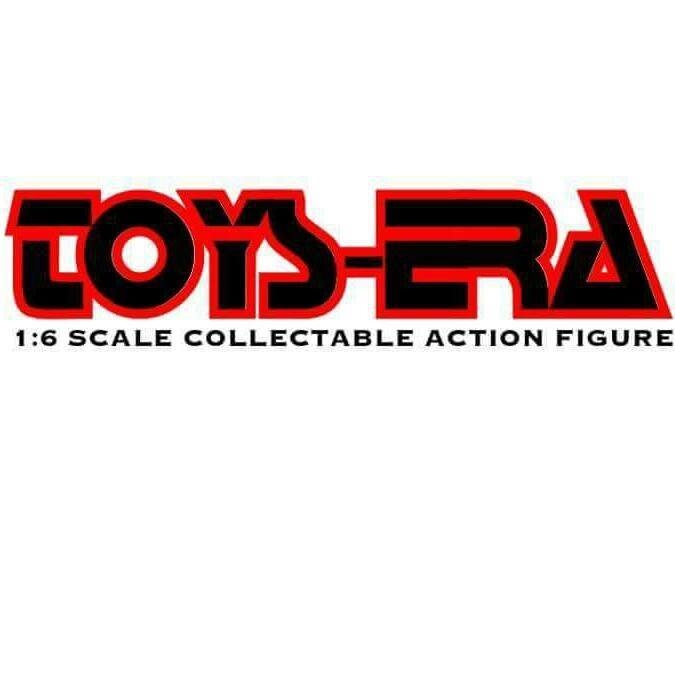

Buy/Sell/Trade Facebook group
My favorite Facebook group to purchase 1/6 collectibles from is One Sixth Republic BST. When it comes to purchasing, I usually save somewhere between $50 and $150, and it helps someone who needs quick cash. I generally don't negotiate with the seller for a lower price since the prices within the group are already great. However, I do ask the seller if their asking price includes PayPal Goods & Services and shipping costs.
When it comes to selling, I always list my price higher than most people's asking price because individuals will often try to negotiate for a lower price. You can't expect people to have the same business ethics as you.
Third-Party Companies (Unlicensed)
There are many third-party companies trying to fulfill the demand from various fanbases, but the quality and craftsmanship of the collectible figures aren't always on par with licensed companies. However, two third-party companies consistently produce great collectibles at excellent prices, filling gaps that licensed companies often overlook.
The first company is SooSoo Toys; they understand what consumers want, and their quality rivals that of licensed companies. The second company is Toys-Era; their production choices are much bolder than those of any other licensed or third-party company. I always get extremely excited when I see their new collectible announcements for pre-order on social media.

General Maintenance
You will want to preserve your expensive figures for as long as possible. Here are a few tips to help extend their lifespan:
Avoid direction sunlight
The direct UV rays will discolor and breakdown the materials of your figure.
Reset to "Museum Pose."
We all enjoy displaying our figures in dynamic action poses, but these can strain the materials over time. I recommend resetting your figure to a “museum pose” within one to two weeks of posing to prevent damage.
Dust Free
Keeping your figures free of dust is essential for any collection. To do this, try to find a display case with no openings, ensuring your figures remain 100% dust-free.
If you choose to display your collectibles in the open, I recommend using a soft-bristle brush to gently remove dust. Many collectors use makeup brushes for this purpose, so consider visiting your local makeup store to find one.